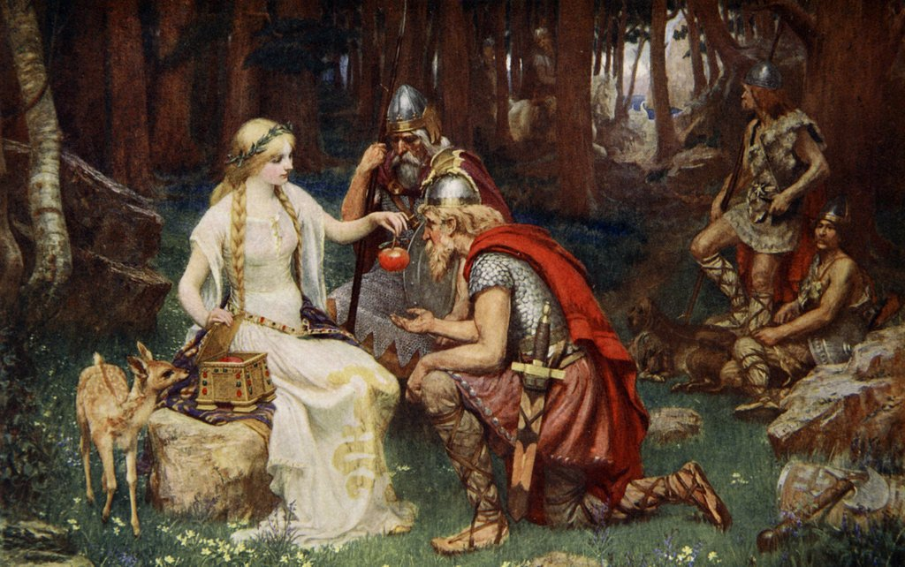
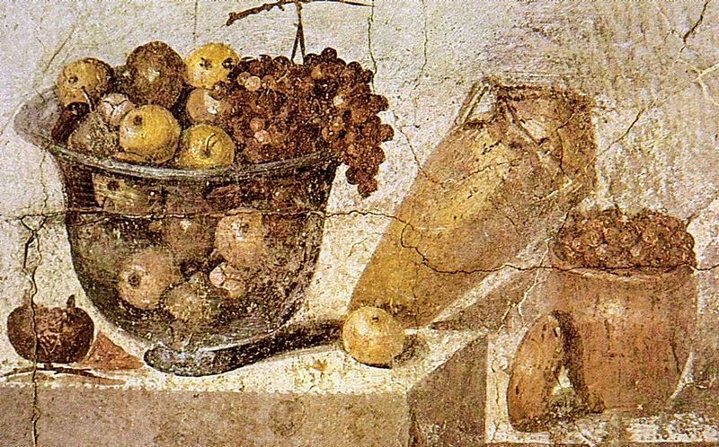
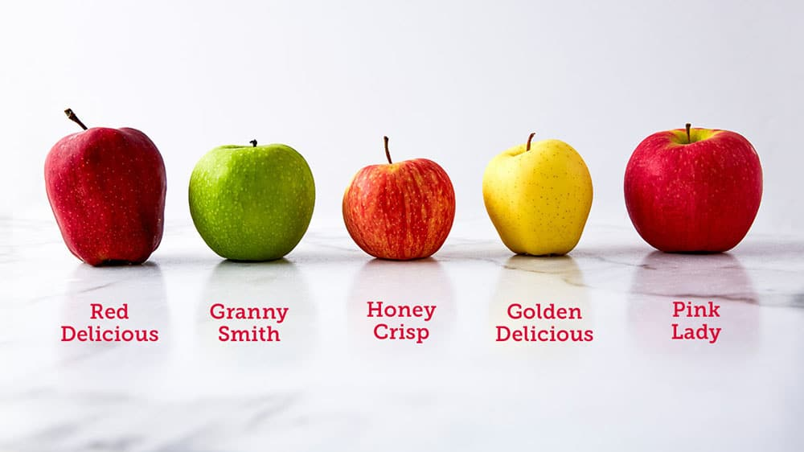

History of Apples
Click on the Headers below to learn more of each topic
Ancient Origins
Ancient Origins
The history of apples traces back to ancient times, with their origins believed to lie in the region between the Caspian and the Black Sea. Wild apple trees, known as Malus sieversii, grew in this area and were initially dispersed by birds and animals, allowing the fruit to spread to surrounding regions. Early human civilizations began to notice the appeal and potential of these wild apples, leading to their cultivation and the start of the apple's journey through history.

Symbolic and Medicinal Uses
Symbolic and Medicinal Uses
As apple cultivation spread, apples started to hold cultural and symbolic significance in various ancient societies. They often appeared in myths, religious texts, and folklore, symbolizing knowledge, temptation, and rebirth. For instance, in Greek mythology, the golden apples of the Hesperides were associated with immortality. Furthermore, apples were utilized for medicinal purposes in traditional remedies due to their perceived health benefits.
Expansion and Cultivation
Expansion and Cultivation
The cultivation of apples advanced significantly during the Roman Empire. The Romans recognized the value of this fruit and played a crucial role in spreading cultivated apple varieties across Europe. They improved horticultural techniques, making it easier to grow apples in different climates. With the decline of the Roman Empire, apple cultivation continued to expand as European monasteries took up the task of preserving and growing various apple varieties.
Apple Varieties
Apple Varieties
As apple cultivation spread, different varieties of apples emerged through selective breeding, grafting, and natural mutations. People began to appreciate the unique characteristics of each variety, and apples became increasingly popular for eating fresh, cooking, and making beverages like cider. By the Middle Ages, apples had become a staple fruit in Europe, valued for their versatility and nutritional benefits.
The Role of Johnny Appleseed
The Role of Johnny Appleseed
In the early 19th century, a significant figure in the apple's history emerged: John Chapman, known as Johnny Appleseed. He was an American pioneer who traveled extensively across the United States, planting apple nurseries and promoting apple cultivation in new territories. His efforts greatly contributed to the expansion of apple orchards throughout the country, making apples more accessible to settlers and Native American communities.
Modern Apple Industry
Modern Apple Industry
In the 20th and 21st centuries, the apple industry experienced remarkable growth and innovation. With the establishment of commercial orchards, advancements in agricultural practices, and the development of new apple varieties through breeding and, later, genetic engineering, apples have become one of the most widely consumed fruits worldwide. Modern transportation and global trade networks also allowed apples to be enjoyed in regions far from their historical origins.